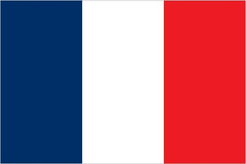
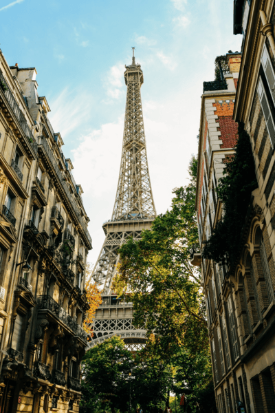

France
One of the most modern countries in the world and a leader among European nations, France plays an important global role in the United Nations. It is constructed on a hybrid presidential-parliamentary governing system since 1958. Cooperating with Germany has led to the economic integration of Europe and the intro of the Euro currency in January of 1999. In the early 21st Century, five French entities became regions and made part of France: French Guiana, Guadeloupe, Martinique, Mayotte, and Reunion.
The World Factbook - All About France

Photo by: The World Factbook 2021. Licensed under Washington, DC: Central Intelligence Agency

Photo by: The World Factbook 2021. Licensed under Washington, Dc: Central Intelligence Agency
Geography
Location
Including metropolitan France, there are six regions of France, all in different locations and geographic coordinates.
| Name | Location | Georgraphic Coordinates |
|---|---|---|
| Metropolitan France | Western Europe, bordering the Bay of Biscay and English Channel, between Beligium and Spain, southeast of the UK; bordering the Mediterranean Sea, between Italy & Spain | 46 00 N, 2 00 E |
| French Guiana | Northern South America, bordering the North Atlantic Ocean, between Brazil & Suriname | 4 00 N, 53 00 W |
| Guadeloupe | Carribean, islands between the Caribbean Sea and the North Atlantic Ocean, southeast of Puerto Rico | 16 15 N, 61 35 W |
| Martinique | Caribean, islands between the Caribbean Sea and the North Atlantic Ocean, north of Trinidad and Tobago | 14 40 N, 61 00 W |
| Mayotte | Southern Indian Ocean, island in the Mozambique Channel, about halfway between northern Madagascar and northern Mozambique | 12 50 S, 45 10 E |
| Reunion | Southern Africa, island in the Indian Ocean, east of Madagascar | 21 06 S, 55 36 E |
Climate
With France being quite a large country, climate varies depending on region with some being relatively hot and humid than others.
- Metropolitan France : generally cool winters and mild summers but mild winters and hot summers along the Mediterranean
- French Guiana : tropical, hot, humid with little seasonal temperature variation
- Guadeloupe and Martinique: subtropical tempered with wind, moderately high humidity with a rainy season June - October
- Mayotte : tropical and humid with rainy season during northeastern monsoon Movember - May; dry season is May - November and cooler
- Reunion : tropical but temperature moderates with elevation; cool and dry May - November, hot and rainy November - April
Terrain
- Metropolitan France: mostly flat plains or gentle hills in north & west, remainder is mountains with the Alps in the East
- French Guiana : low-lying coastal plains that rise to hills and small mountains
- Guadeloupe : the Basse- Terre region is volcanic with interior mountains while the Grande- Terre is low limestone and most of the seven other islands are volcanic
- Martinique : mountains with indented coastline and inactive volcano
- Mayotte : deep ravines and ancient volcanic peaks
- Reunion : mostly rugged and mountainous; fertile lowlands along coast
People and Society
Ethnic Groups & Languages
France is home to an array of cultures and lamguages with French and English being the primary languages spoken across the country. The population of France is a recorded 68, 521, 974 - a 2023 estimation. Among this number are Celtic and Latin with Slavic, North African, Indochinese and Basque minorities. The "overseas" departments are Black, White, East Indian, Chinese, and Amerindian.
Religions
In the state of France; 47 percent are Roman Catholic, 4 percent are Muslim, 2 percent are Protestant, 2 percent are Buddhist, 1 percent is Orthodox, and 1 percent is Jewish. Surprisingly at almost half, 33 percent, of the popular identify with no religion and are atheist. These are 2021 estimates and from the statistics, nine percent were unspecified.Age & Sex Ratio
| Age | Percentage | Men: Women Ratio | 0-14 years old | 18.04 % | 1.05 males: 1 female |
|---|---|---|
| 15-64 years old | 60.53 % | 1.01 males : 1 female |
| 65 years and over | 21.42 % | 0.78 males : 1 female |
| total population - all ages | 100 % | 0.96 males : 1 female |
Economy
To provide an overview of France's economy, it is high-income, advanced and a diversified EU euro currency user. Some of the agricultural products that France trades are wheat, sugar beets, milk, barley, potatoes, pork, maize, and apples. The industries relevant to the country's market are machinery, chemicals, automobiles, aircraft, and electronics. With strong tourism, the economy also has a huge market in aircraft manufacturing and industrial sectors. Along with being a partner of the United States, via France's 2030 strategy it is transitioning to a green economy due to civil unrest and ongoing pension reform protests.
Trading - Imports & Exports
France's trading has a huge reliance on international trading. Their export partners are Germany, Italy, Belgium, the United States, and Spain. Among their exports are aircraft, packaged medicines, cars and vehicle parts, wine, beauty products, and gas turbines as of 2021 record.
France has more import partners than export. The United States is not one of them, but rather China and the Netherlands make the list. The import goods are cars, refined petroleum, packaged medicines, and aircraft machinery. With the exchange rate decreasing over the years, the Euro is becoming less valuable when put against the dollar. Estimated in 2021, a US dollar is equivalent to 0.845 Euros.
Labor Force
With the entire population taken into account, approximately 31.132 million people are in the workforce. With unemployment in the nation decreasing, there's apprimately the same male:female ratio for youth unemployment. Between the ages 15 and 24, 19.9 percent of men are unemployed whilst 20.3 percent of females are. The unemployment rate that was recorded in 2021, including the overseas territories, is 8.06 percent. Unfortunately, the population below poverty line hasn't been measured since 2018, which was at 13.6 percent.
GDP
The real GDP which is the purchasing power parity is 3.048 trillion dollars, a 2021 estimate. The GDP growth rate has been heavily increasing over the course of a 2 year period : 2019- 2021. In 2019, the growth rate was 1.84% and fell to the negatives in 2020. It bounced back to 6.82% in 2021.
Although the growth rate has been growing, the GDP per capita has stayed relatively the same. As of 2021, it's been $45,000. In contrast to growth, the inflation rate has remained around the same number. In 2019, the consumer price rate was 1.11% and in 2021, 1.64%.
The GDP is heavily consumed in the services sector composition. With a strong emphasis on household consumption, the end use composition have been mainly between the exports of goods and services and household consumption.
| GDP Composition by Sector of Origin | |
|---|---|
| Sector | Percentage |
| Agriculture | 1.7% |
| Industry | 19.5% |
| Services | 78.8% |
| GDP Composition by End Use | |
|---|---|
| Composition | Percentage |
| Household Consumption | 54.1 % |
| Government Consumption | 23.6% |
| Investment in fixed capital | 22.5 % | Investment in inventories | 0.9 % |
| Exports of goods and services | 30.9 % |
| Imports of goods and services | -32 % |